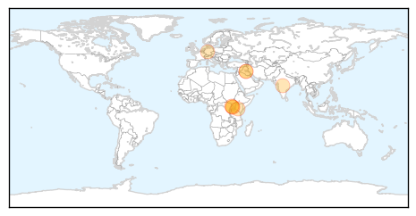
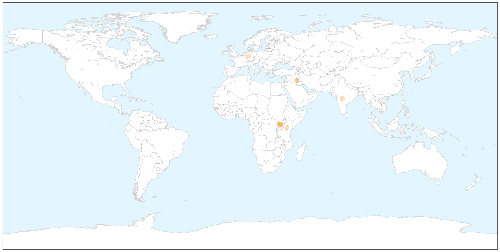
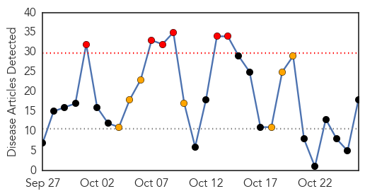
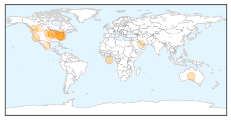
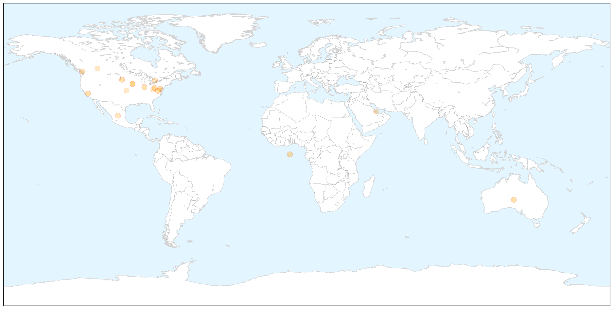
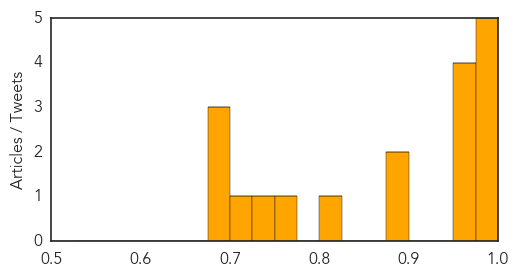

Cholera
30-Day Web Trend
3 alerts, 0 warnings

30-Day Twitter Trend
9 alerts, 0 warnings

Article Locations

X

Article Confidences

Top Articles:
- 0.961
- Syrian cholera outbreak could cause “international threat”
- 0.905
- Cholera outbreak in Uganda district kills six people
- 0.863
- Winnie Byanyima Shifts Base to Nairobi
- 0.863
- Museveni Urges Ugandans to Take Pride in Paying Taxes
- 0.863
- Financiers to Discuss Benefits of Investing in Africa
- 0.863
- FEATURE: Blogging on a Steady Rise in Uganda
- 0.863
- Africa, India Boost Trade Ties at Summit
- 0.641
- Iraq: Iraq: 3RP Monthly Update - September 2015: WASH
Top Tweets:
- 0.504
- RT: Unicef: Cholera outbreak in the West and Central Africa: Regional Update 2015 - Week 40 https://t.co/EoNjviy4Wo
Influenza
30-Day Web Trend
6 alerts, 7 warnings

30-Day Twitter Trend
0 alerts, 0 warnings

Article Locations

X

Article Confidences
Top Articles:
- 0.994
- Brant health officials recommend flu shot
- 0.991
- Fighting the flu bug
- 0.991
- Thinking of getting a flu shot? Don't put it off
- 0.987
- Flu Shots For Students To Be Stressed In West Virginia
- 0.981
- Premier McNeil: This won’t hurt a bit
- 0.965
- Healthcare workers & flu vaccinations
- 0.963
- Health Officials Expect Flu Shots to be More Effective
- 0.961
- This Year’s Flu Shot Is Ready, State Health Officials Say
- 0.958
- Medical professionals promote flu vaccines
- 0.898
- Today's stories from newspapers in Flamborough
- 0.884
- Is the food supply safe?
- 0.806
- Today's stories from newspapers in Caledon
- 0.751
- Are we prepared for its return?
- 0.749
- Storm Lake Pilot Tribune: State News: Ducks shot in Minnesota test negative for deadly bird flu (10
- 0.712
- Time for mandatory flu shot vaccines for Alberta health-care workers?
- 0.699
- SCH campaign on flu vaccination begins
- 0.693
- Local, state health and education officials discuss importance o
- 0.683
- Vancouver Coastal Health takes flu shots to the people
Top Tweets:
-
No tweets found for Oct 26, 2015